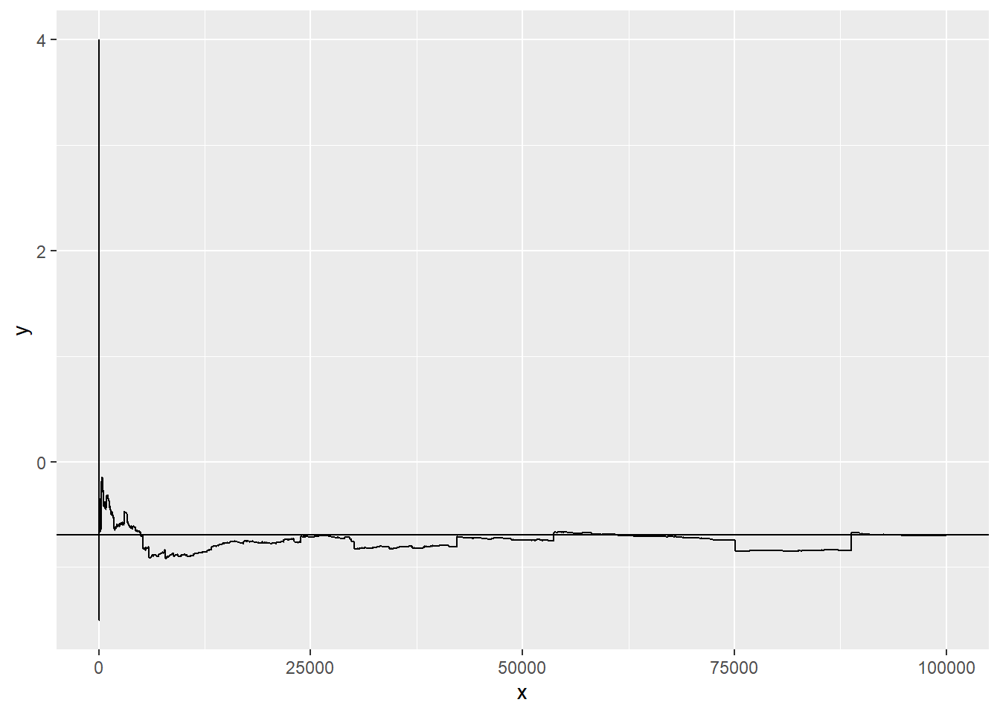

12 Limit theorems
This chapter deals with limit theorems.
The students are expected to acquire the following knowledge:
Theoretical
- Monte Carlo integration convergence.
- Difference between weak and strong law of large numbers.
Exercise 90 Show that Monte Carlo integration converges almost surely to the true integral of a bounded function.
Solution. Let \(g\) be a function defined on \(\Omega\). Let \(X_i\), \(i = 1,...,n\) be i.i.d. (multivariate) uniform random variables with bounds defined on \(\Omega\). Let \(Y_i\) = \(g(X_i)\). Then it follows that \(Y_i\) are also i.i.d. random variables and their expected value is \(E[g(X)] = \int_{\Omega} g(x) f_X(x) dx = \frac{1}{V_{\Omega}} \int_{\Omega} g(x) dx\). By the strong law of large numbers, we have \[\begin{equation} \frac{1}{n}\sum_{i=1}^n Y_i \xrightarrow{\text{a.s.}} E[g(X)]. \end{equation}\] It follows that \[\begin{equation} V_{\Omega} \frac{1}{n}\sum_{i=1}^n Y_i \xrightarrow{\text{a.s.}} \int_{\Omega} g(x) dx. \end{equation}\]
Exercise 91 Let \(X\) be a geometric random variable with probability 0.5 and support in positive integers. Let \(Y = 2^X (-1)^X X^{-1}\). Find the expected value of \(Y\) by using conditional convergence (this variable does not have an expected value in the conventional sense – the series is not absolutely convergent). R: Draw \(10000\) samples from a geometric distribution with probability 0.5 and support in positive integers to get \(X\). Then calculate \(Y\) and plot the means at each iteration (sample). Additionally, plot the expected value calculated in a. Try it with different seeds. What do you notice?
Solution. \[\begin{align*} E[Y] &= \sum_{x=1}^{\infty} \frac{2^x (-1)^x}{x} 0.5^x \\ &= \sum_{x=1}^{\infty} \frac{(-1)^x}{x} \\ &= - \sum_{x=1}^{\infty} \frac{(-1)^{x+1}}{x} \\ &= - \ln(2) \end{align*}\]
set.seed(3)
x <- rgeom(100000, prob = 0.5) + 1
y <- 2^x * (-1)^x * x^{-1}
y_means <- cumsum(y) / seq_along(y)
df <- data.frame(x = 1:length(y_means), y = y_means)
ggplot(data = df, aes(x = x, y = y)) +
geom_line() +
geom_hline(yintercept = -log(2))